Introduction
Welcome to yet another strategy guide for Star Trek Captain’s Chair: To Boldly Go. It’s the final guide from To Boldly Go, for one of the most iconic villains in Star Trek: Khan Noonien Singh. Although recent Star Trek has messed with his origins a bit (see SNW 2x3: Tomorrow and Tomorrow and Tomorrow), his background as a genetically modified Augment remains consistent. He was considered the “best of tyrants and the most dangerous”, providing relative peace in exchange for little to no personal freedom. When the results of the Eugenics Wars turned against him, 84 of his Augment acolytes followed him in suspended animation into space, only to be awakened by James T. Kirk and the relatively naive crew of the U.S.S. Enterprise. I highly recommend watching Space Seed (TOS 1x24) and Star Trek II: The Wrath of Khan prior to playing this deck, because the thematic elements here are just too good to miss out on. So go, watch three hours of content, and I’ll meet you back here for an overview of Khan’s captain deck.
First note before we dive in: Khan has no basic board. He’s also a 9/10 complexity deck. That doesn’t mean you can’t play it after a few plays of Captain’s Chair, but I am never going to recommend giving anyone this deck before a few plays of the game. I’ll even go so far as to say that you should try playing Khan solo before a multiplayer game. After going through this guide, the puzzle here should more or less make sense, but this isn’t meant as an introduction to the game whatsoever. You really should have a good grasp of not just the basics of gameplay, but also of the composition of the market. Players trying Khan early in their experience may be soured on the game, and nobody wants that (or at the very least, I don’t want that, nor do the designers and the rest of the Development team).
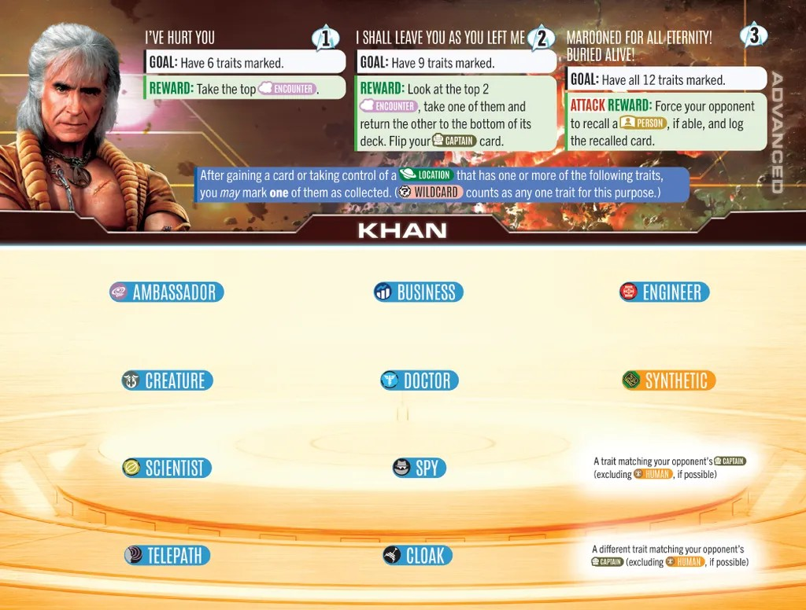
Khan’s Player board has no Specialty tracks. You will not be advancing on Research, Influence, or Military. Instead, Khan has twelve separate traits listed. These are self-explanatory, except that the Captain traits need a little more explanation. I’ve included a picture from the rulebook for easy reference, but essentially, you need to mark two non-human traits of your opponent, if possible. So for Kirk, as the example indicates, it’s not possible, and you would thus have to mark Human and Starfleet. Soval’s example does trip people up, because it feels like he should be able to mark Vulcan, Telepath, or Ambassador. But as indicated, you can only duplicate a trait that appears elsewhere on the board once. So you can mark Telepath on the board for one card, and Telepath again for another card, but you can’t mark Ambassador because you’ve already duplicated one trait that was printed on the board. Confusing? A little, but it won’t come up that often so just remember the rule. It’s a 9/10 deck after all. If you happen to be playing in Cadet mode, select another captain at random to determine which traits you need to mark for the entries.
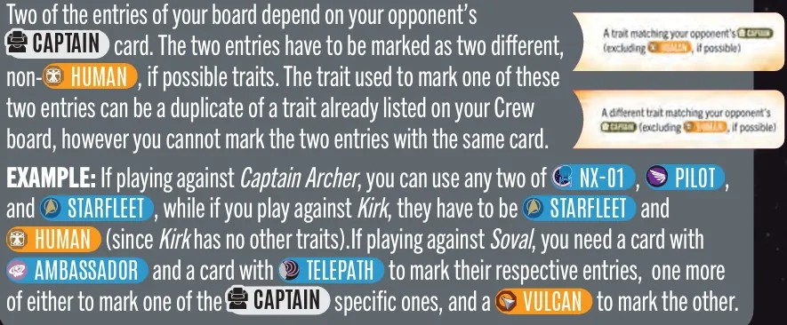
During Khan’s game, anytime he gains a card or takes control of a Location, you can mark a trait on your board that matches a trait on the gained/controlled card. Wildcard counts as any trait (and that’ll be coming up on a Location in Resistance is Futile). You don’t get to mark traits for taking an Encounter or Incident (or being given a card by your opponent). A couple basic notes on traits. You have to make the choice immediately. If you gain Riva, for example, you have to choose between Ambassador and Telepath right away. Making that decision will often be based on what you think is still in the market, the Neutral Zone, or simply what you think you’re most likely to find later on. That’s why market knowledge is so crucial for great Khan gameplay. Second, some people have already noticed some degradation of the board trait punch-outs, and there are some third party accessories as well as simple options (place a resource from the supply on them to mark them). I don’t have any complaints as cardboard was always going to degrade over time, and this game gets a lot of table time (for me at least).
↑ back to topMissions
Khan’s Missions are directly tied to marking traits, making him one of the most straightforward captains in that regard. His first Mission, I’ve Hurt You, requires you to mark six traits and rewards you with a point and the top Encounter. The second Mission, I Shall Leave You As You Left Me, requires you to mark nine traits and rewards you with two points and a choice between the top two Encounters, and then you flip your Captain card (see below). The third Mission, Marooned For All Eternity! Buried Alive! (KHAAAAANNNNN!!!!!!), requires you to mark all twelve traits and rewards you with three points and an Attack that forces your opponent to recall a Person, if able, and log the recalled card. Encounters are always a nice benefit for Mission completion, which is partially why Khan’s Missions are valued so low. There will also be an opportunity to double the final scoring from six to twelve for Missions using Genesis Device. Honestly, I find that final Mission to be thematic but mechanically underwhelming, though it could definitely mess with your PVP opponent’s game if they’re watching for it.
↑ back to topCaptain Card & Starting Components
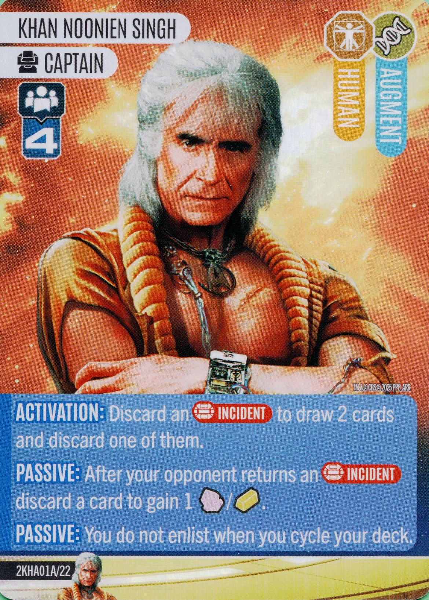
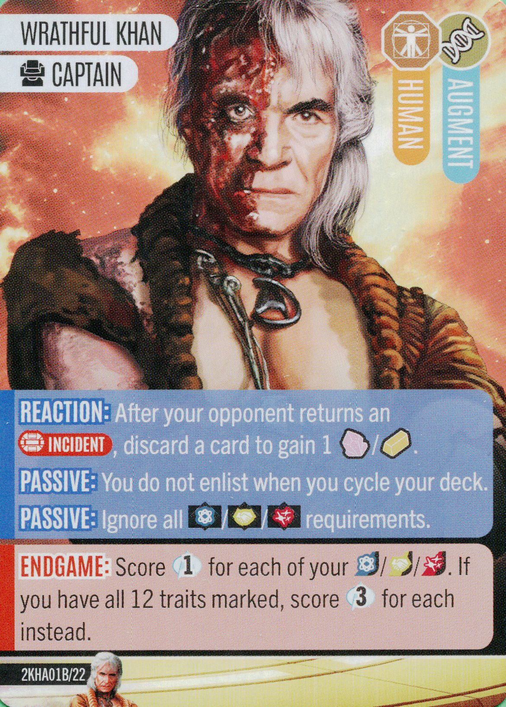
Khan’s front side of his Captain card has four Away Teams (the Augments that survive Ceti Alpha V are really working hard). Khan has the Human and Augment traits. His basic side has one Activation and two Passives. His Activation allows you to Discard an Incident to draw two cards (discarding one). That’s a great way to get to look at more of your deck, but there’s some complexity there that we’ll get into later on. He also has a Passive operation that requires you to discard a card to gain a Dilithium or Latinum when your opponent returns an Incident, which can sometimes be a pain. His third operation is a Passive that states “You do not enlist when you cycle your deck.” That means that when you reshuffle, you won’t Enlist a card from your Developments, and you have no Reserve deck. As a quick note on that, some captains, like Archer (and maybe more in the future), can reconstitute their Reserve deck or add cards to the top of their Reserve deck. Khan cannot do that, so if you were ever told to place a card on top of your Reserves as a cost, you cannot fulfill that cost. If and when there are specifics to discuss for hypothetical future cards like this, I’ll try to remember to highlight them.
When you complete your second Mission (nine traits marked), you flip your Captain card to “Wrathful Khan.” This is Khan after his battle with Kirk in the Mutara Nebula, burned face and nothing left to lose. Even though there are no Away Teams listed, you will still return Away Teams to your new Captain card after controlling Locations. Your traits remain Human and Augment, but your Passive ability to gain Dilithium or Latinum by discarding a card when your opponent returns an Incident changes to a Reaction, and is thus optional, but limited to once a turn. You still cannot enlist when you cycle your deck, but you can now ignore all Specialty Requirements. This is huge, as not having Specialty tracks closes off a huge number of card abilities for Khan early in the game. Once your captain becomes Wrathful Khan, you’ll also score one point for each focus scoring icon you have at the end of the game, unless you have all twelve traits marked, in which case you score three points for each focus scoring icon. It does mean that Khan can be at a bit of a disadvantage compared to captains who are using their basic board, especially in mixed markets with more potential focus scoring. But I’m sure you’ll adapt.
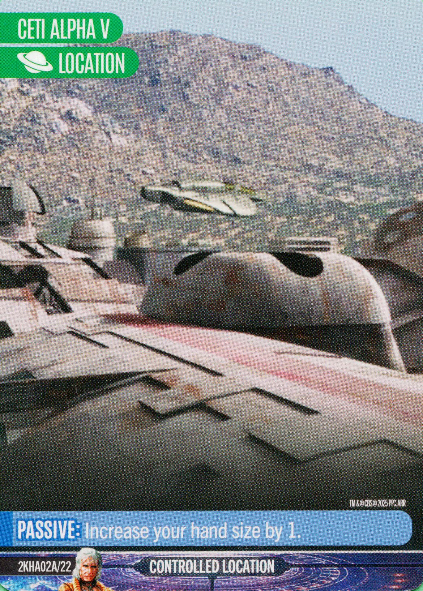
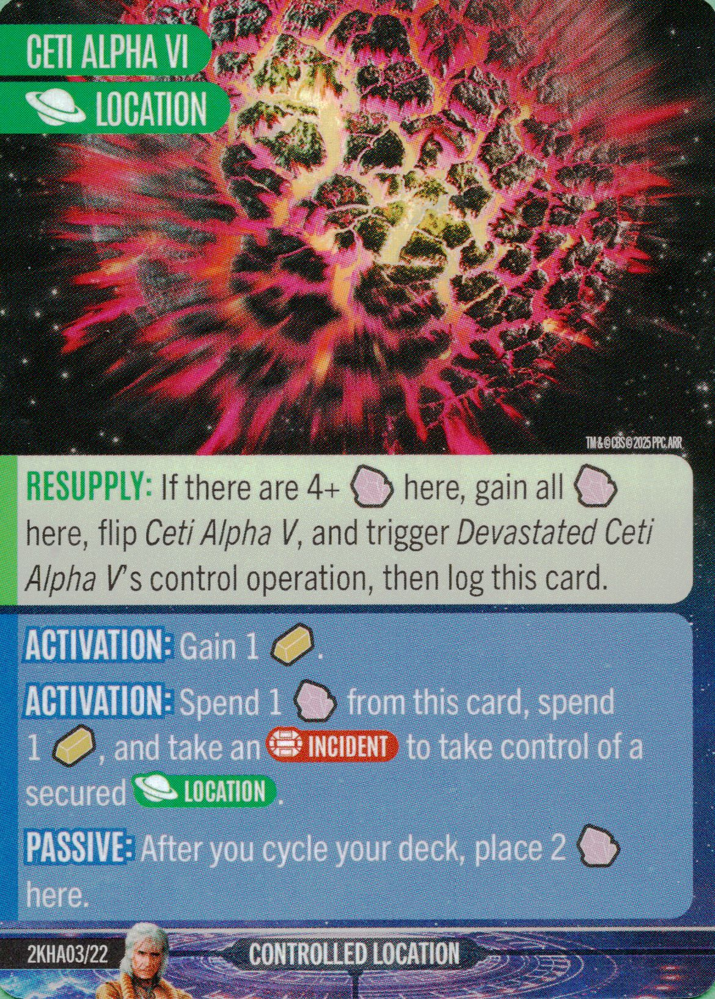
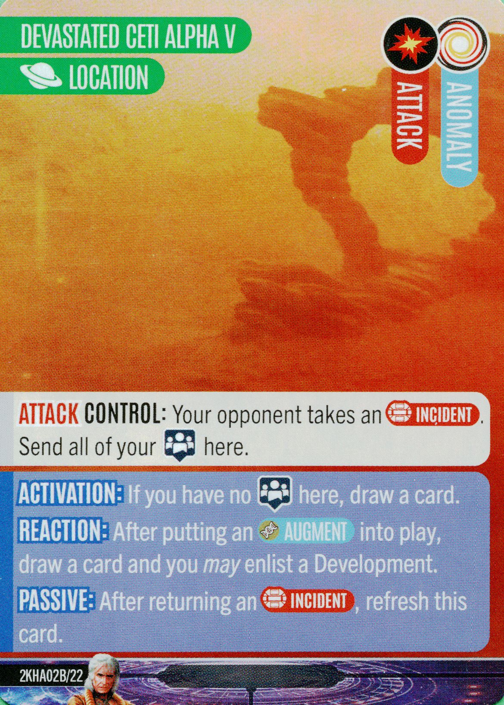
Khan starts with two Controlled Locations. The first is Ceti Alpha V, which has a Passive that increases your hand size by one, meaning that you start the game with a six-card hand. The image here of Ceti Alpha V is actually from the television show Enterprise (ENT 3x8: Twilight), in an episode where Archer contracts interspatial parasites which prevent him from forming new memories, and because he cannot lead the NX-01 Enterprise, it fails in its Mission to keep the Xindi from destroying Earth. The last living Humans try to rebuild on Ceti Alpha V, which is somewhat barren but habitable, as it would have been when Khan is marooned there after the events of Space Seed. Of course, because they’re anomalies, Dr. Phlox cures Archer’s parasites, which makes them retroactively heal backwards in time (or something) and because he’s fine the past is changed and none of this ends up happening. What a story behind this Location’s image!
Khan also has Ceti Alpha VI as a Controlled Location. The image here is just as striking, and as Khan describes it in The Wrath of Khan, Ceti Alpha VI exploded, shifting the system’s orbit enough for Starfleet to later believe that Ceti Alpha V was in fact the destroyed Ceti Alpha VI. There’s a lot to unpack here, and it’s worth going from bottom to top. First, the Passive operation tells you to add two Dilithium to Ceti Alpha VI every time you cycle. This acts as a countdown clock for its destruction, and the Resupply. The second Activation allows you to spend a Dilithium from Ceti Alpha VI, a Latinum from your supply, and Take an Incident to take control of a secured Location. This is very likely the only way Khan is going to be able to control a Location early in the game. Although there’s a cost, you get the certainty of being able to control a Location during your Action Step, meaning you’re not concerned with opponents messing with you in the Neutral Zone. By removing a Dilithium from the card, it can extend the number of turns you have prior to flipping Ceti Alpha V by one, maybe two turns. If you can’t control a Location, you can also use the Activation to gain a Latinum. The Resupply operation will trigger when you have at least four Dilithium on Ceti Alpha VI, at which time you’ll gain all Dilithum from Ceti Alpha VI, flip Ceti Alpha V, trigger Devastated Ceti Alpha V’s control operation, and log Ceti Alpha VI. Not confusing at all, and it will be your main influx of Dilithium at the beginning of the game.
Devastated Ceti Alpha V is the more familiar landscape seen in The Wrath of Khan. It has the Attack and Anomaly traits. When Ceti Alpha VI explodes (logs), your opponent will take an Incident and you’ll send all of your Away Teams here, either from your Captain, controlled Locations, the Neutral Zone, or any other hypothetical Location (that’s not a tease of future content, I’m simply trying to say “from everywhere”). Devastated Ceti Alpha V is interesting, as you have a couple different goals with this card. The first goal is to get all of your Away Teams off of Devastated Ceti Alpha V. Unfortunately, if you get a couple Away Teams off into the Neutral Zone, then control a Location (or your opponent does), those Away Teams will go back to your Captain card and you’ll end up sending those out again before you can send the remaining Away Teams from Devastated Ceti Alpha V. So try to get all four out around the same time, if possible, and even consider delaying control so that you have the option of drawing a card using the Activation. The next goal presented by Devastated Ceti Alpha V is the incentive to play cards with the Augment trait. If you put an Augment into play, the reaction allows you to draw a card and Enlist a Development. This is the primary way using Khan’s deck to develop (you can still use cards like Cpt. Terrell, Wajahut, or common cards like Ancient Relay Station or Malik). Timing this right is the key to developing as fast as possible as Khan. Devastated Ceti Alpha V also has a Passive that refreshes this Location when you return an Incident, meaning that you might be able to enlist a Development multiple times in one turn.
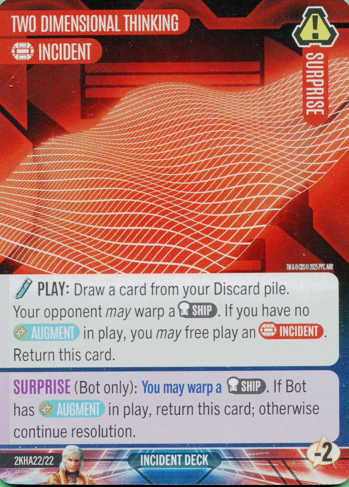
Khan also starts the game with a custom Incident in the Incident Deck, titled Two Dimensional Thinking. This is a reference to Kirk’s inquiry of Spock during the Battle of the Mutara Nebula, when Spock analyzes Khan as “Intelligent, but not experienced. His pattern indicates two-dimensional thinking.” This weakness allows Kirk to use his knowledge of the three dimensions of space to lose Khan in the Mutara Nebula, like submarines in the water. Sometimes it does feel like Star Trek writers forget that space is three-dimensional, doesn’t it? This Incident will be shuffled into the Incident deck, and it benefits your opponent more than it benefits you. The Play Action allows you to draw a card from your discard pile, your opponent may warp a Ship, and if you have no Augment traits in play, you can free play an Incident before returning Two Dimensional Thinking. Khan will always have an Augment trait in play from his Captain card, so this won’t ever be a double free play for Khan. It also hasa Surprise operation for the Bot, which is better for the Bot when there are no Augments in play.
↑ back to topKhan’s Available Cards
Khan has ten Available cards: three Person cards, one Directive, one Ship, two Locations, and three Incidents.
↑ back to topMarla McGivers (Person)
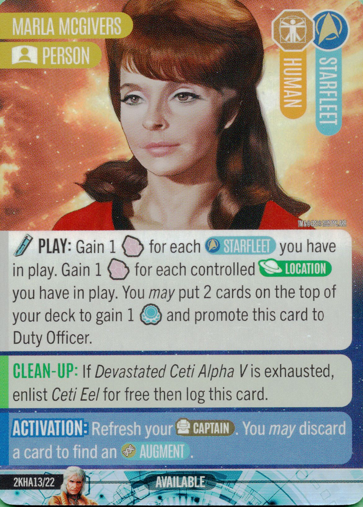
The Enterprise historian Lieutenant Marla McGivers was asked to accompany James Kirk and the Away Team to survey the S.S. Botany Bay. She then immediately felt attraction to Khan, to the degree that she submitted to his violent and forceful methods of coercion and assisted him in reviving his Augment crew and taking over the Enterprise. When it became clear that this action would result in the deaths of Kirk and the crew, she betrayed Khan, helping Kirk and Spock escape to recover the Enterprise. She faced the choice between a court martial, and joining Khan in his exile on Ceti Alpha V, and chose the latter. She was not among Khan’s crew in The Wrath of Khan, and although never explicitly said on screen, most assume that Khan is referring to her death by Ceti eel when he mentions the death of his wife.
Marla has the Starfleet and Human traits. Her Play Action gains Khan a Dilithium for each Starfleet in play and another Dilithium for each controlled Location Khan has in play. She can also self-promote by putting two cards on the top of the deck, which gains Khan a Glory. This is another nice Dilithium boost early, and depending on your strategy in regard to Ceti Alpha VI, it can help extend the amount of time it takes to cycle your deck. Her Activation allows you to refresh Khan, and you can discard a card to find an Augment. Early game this is limited to Joachim and Wajahut, but if you can keep Marla around for a little while you may be able to find other Augment cards your first turn after Ceti Alpha VI explodes. Marla’s Clean-up operation triggers if Devastated Ceti Alpha V is exhausted, at which time you’ll enlist Ceti Eel for free and log Marla in the barren ground of Ceti Alpha V (too much?).
↑ back to topJoachim (Person)
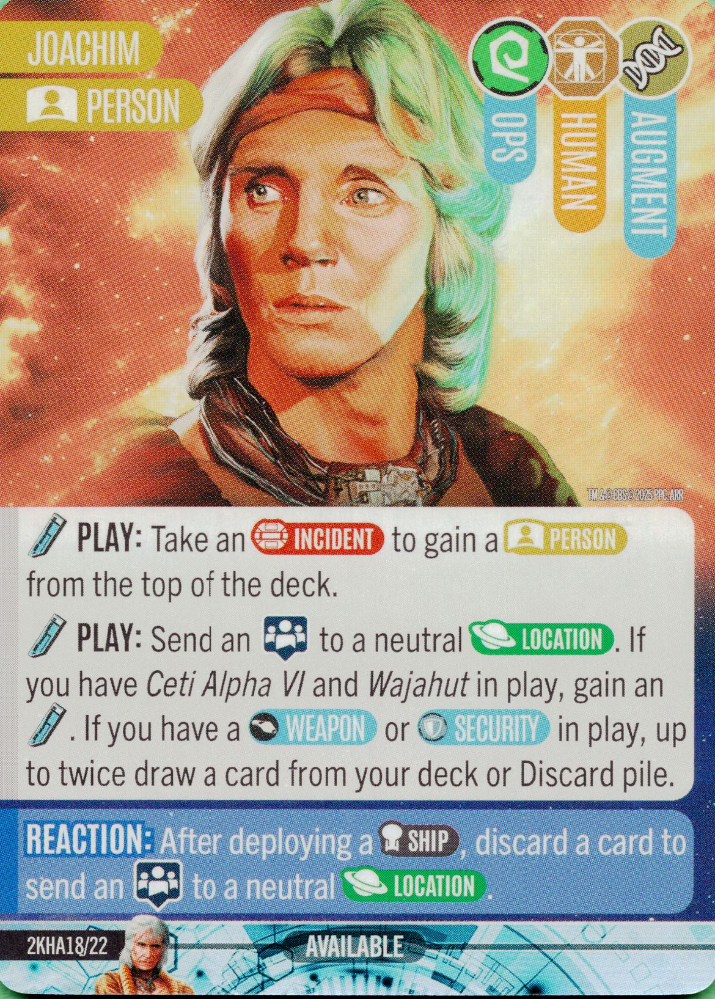
A faithful disciple of Khan, Joachim fled with Khan on the S.S. Botany Bay, and accompanied Khan in exile to Ceti Alpha V. After helping to hijack the U.S.S. Reliant, Joachim manned the helm and weapons. He died when Khan did not heed his advice to take the Genesis Device and ignore Kirk’s taunts, leading Khan to swear “I shall avenge you.”
Joachim has the Ops, Human, and Augment traits. His first Play Action lets you gain a Person card from the top of the deck at the cost of taking an Incident. For extended Ceti Alpha VI games, this is an important part of that strategy. Alternatively, you can use his second Play Action to send an Away Team to a neutral Location, and if you have both Ceti Alpha VI and Wajahut in play, you’ll gain back an action token (which would be early in the game). If you have a Weapon or Security trait in play, you can draw a card from your deck or discard pile twice. His Reaction triggers when you deploy a ship, and you can discard a card to send an Away Team to a neutral Location. Joachim is your best weapon for getting Away Teams out early, and as the game progresses he will continue to serve that use, as well as providing you a way to enlist your Developments.
↑ back to topWajahut (Person)
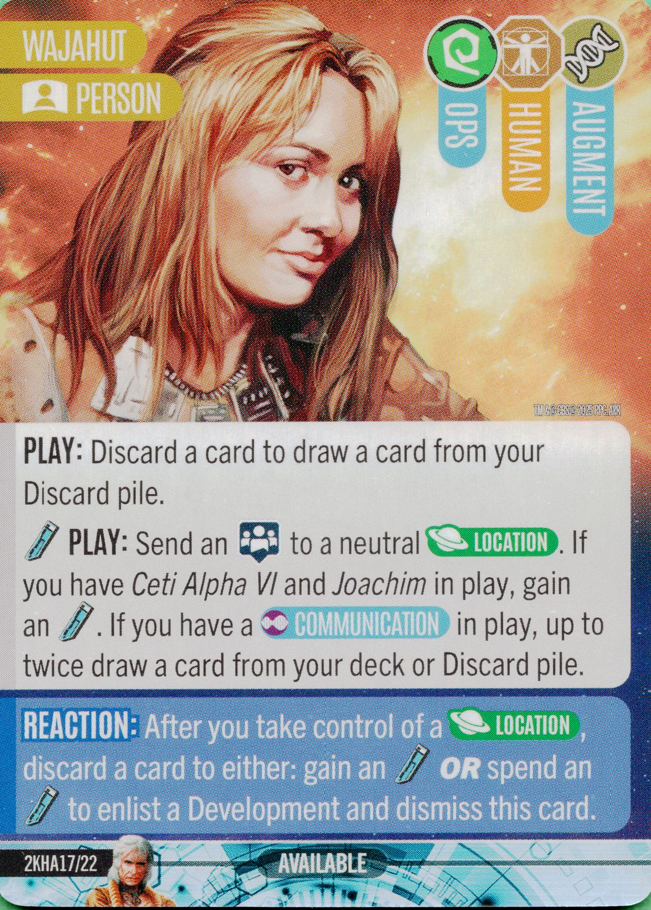
There’s not a lot of lore on Wajahut, and I’m not even sure her name is mentioned anywhere outside of the Star Trek Customizable Card Game, so I’m not going to try to make a bigger lore mountain out of a molehill. She has the Ops, Human, and Augment traits. Her free play lets you discard a card to draw a card from your discard pile, which can be super useful when using Khan’s Activation to draw two/discard one. Her Play Action mirrors Joachim’s, sending an Away Team to a neutral Location, and if you have both Ceti Alpha VI and Joachim in play, you’ll gain back an action token. Then if you have a Communication in play, you can (up to twice) draw a card from your deck or discard pile. This is some great flexibility, especially as Khan’s deck starts to get bigger mid-to-late game. Her Reaction triggers when you take control of a Location, allowing you to discard a card to gain an action token, or discard a card to enlist a Development and dismiss her as Duty Officer. I’m going to be very honest, this hasn’t come up much in my game play, mostly because simply putting her into play also allows you to enlist a Development once you’re on Devastated Ceti Alpha V. This Reaction can be used to perhaps delve into your Developments earlier in the game, but the real benefit of this card is the extra Actions and controlled card draw from your discard pile.
↑ back to topSalvage (Directive)
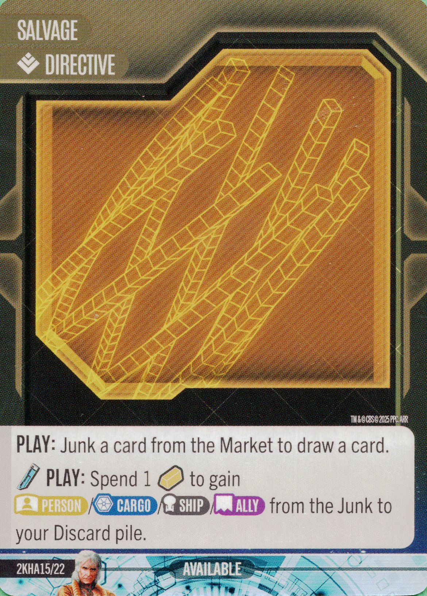
I discussed the Salvage Directive in the Rebner guide (and I’m guessing it’ll come up again too). It has a free play that lets you Junk a card in the market to draw a card, which helps when you’re low on action tokens or need that one more card you know you have in your deck. It also has a Play Action where you can gain a standard suit card from the Junk to your discard pile at the cost of a Latinum. This is great if there’s a lot of cards you want in the Junk, but pretty wimpy the earlier you are in the game. For the moment (October 2026), combining boxes results in one or two cards in the Junk from the start of the game, which works to Khan’s benefit. This is very likely to change, so enjoy it for now. Khan gets the added bonus of getting to junk cards that have the traits he wants, then using his abilities to grab them or mark them later on.
↑ back to topS.S. Botany Bay (Ship)
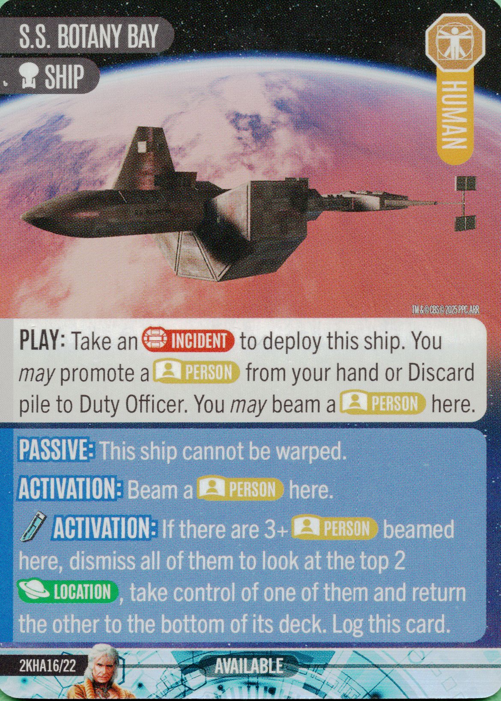
Khan’s escape from Earth, the S.S. Botany Bay was found by James Kirk, at which time Khan was revived. It was discarded by Khan when he took over the Enterprise, but what Captain’s Chair supposes is… what if it wasn’t?.
The S.S. Botany Bay gets the rare Human trait on a ship (because Starfleet ships, while predominantly Human, are not exclusively Human). Its free play requires you to take an Incident to deploy, then you may promote a Person from your hand or discard pile to Duty Officer, and may beam a Person to the S.S. Botany Bay. It cannot be warped, so the Ship token is going the way of the Shuttlecrafts (it’s thematic because it can’t warp). It does allow you to beam a Person, then, when you have three Person cards beamed there you can dismiss them all to take the top two Locations, controlling one and returning the other to the bottom of the deck. In isolation, this is a great ability. However, you don’t want your Augment cards to get stuck on the S.S. Botany Bay, so it’s tough to know exactly when to deploy. I’ll have some more thoughts on this soon.
↑ back to topVacated Regula I (Location)
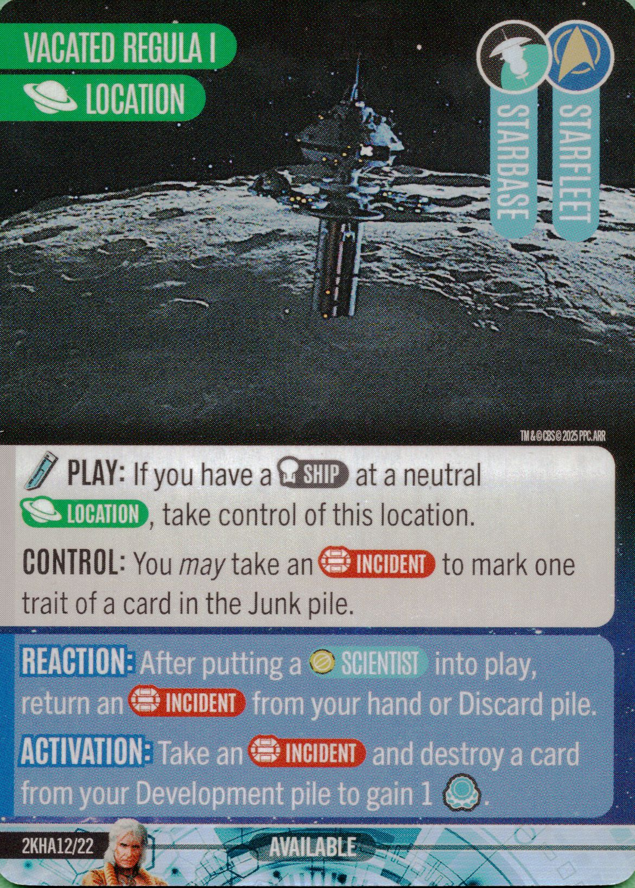
When Khan escapes Ceti Alpha V with his fellow Augments, he heads to the Regula I Space Laboratory, home of Project Genesis. Hoping to lure Kirk near the station, he leaves the mind controlled Chekov and Terrell as spies in case he cannot defeat Kirk in space combat (which proves true).
Regula I made an appearance as an Advanced Location in the Core Box, but it’s slightly different here. It lacks the Scientist trait and two Research Skills (the scientists vacated after all), but retains the Starfleet and Starbase traits. It’s otherwise completely different from the Neutral Zone Location. You can only use the Play Action if you have a Ship at a neutral Location, which means that until you get a Ship other than the S.S. Botany Bay you won’t be able to control this Location. Once you control it, you may take an Incident to mark a trait in the Junk. This is an issue, because the Junk often doesn’t have much in it, and that’s the only place you can get Cargo/Ship/Ally cards at the beginning of the game (Khan only has Salvage). But if you delay getting this Location out, it will gum up your deck with a card you can’t use for much. Once you take control, you’ll be able to return Incidents from your hand or discard pile after putting a Scientist in play. Alternatively, you can take an Incident and destroy a card from your Development Pile to gain a Glory. The ideal usage of this card would obviously be returning Incidents, and you’ll have a greater incentive to get Scientist cards to assist in that goal. However, don’t count out the strategy of destroying a card from your Development Pile to rush getting the Genesis Device. Considering it also gets you a Glory, that’s a strategy that can pay off if you’re really pushing for a quick game.
↑ back to topMutara Nebula (Location)
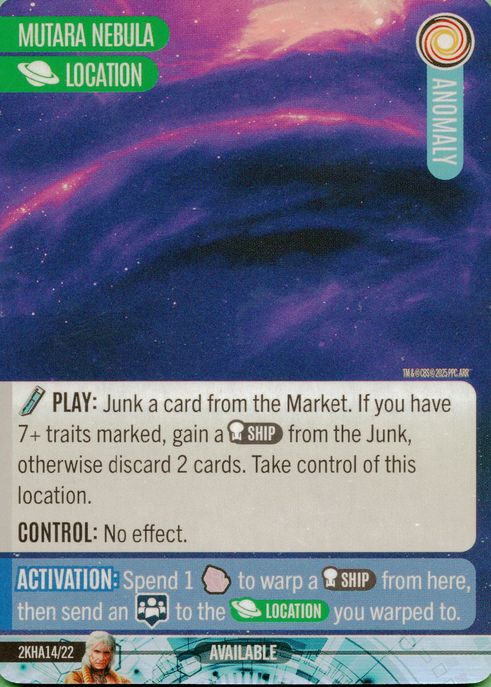
The Mutara Nebula was an interstellar dust cloud comprised of static discharge and ionized gases. Sensors and shields of any ship entering the Nebula became inoperative, making it a perfect place for Kirk to even the odds against Khan and the hijacked U.S.S. Reliant. When the battle was lost, Khan detonated the Genesis Device, causing a new planet to form in the matter of the Nebula.
Another available Location, the Mutara Nebula has the Anomaly trait. Its Play Action requires you to junk a card from the market (no problem for Khan) and then if you have seven or more traits marked, you’ll gain a Ship from the Junk. Otherwise, you’ll have to discard two cards (or one, or none, if you don’t have two cards left in your hand, since it’s not a cost) to take control of the Mutara Nebula. This begs the question: is it worth it to wait for seven traits to be marked? I am of the opinion that it is nearly always worth it to wait. That Ship is a big benefit, both for points and Neutral Zone control. However, if you get to the end of your turn and you have less than seven traits and one action token remaining, it’s not the worst thing in the world to give up that Ship from the Junk.
↑ back to topTo The Last, I Will Grapple With Thee! From Hell’s Heart, I Stab at Thee! I Spit My Last Breath at Thee! (Incident)
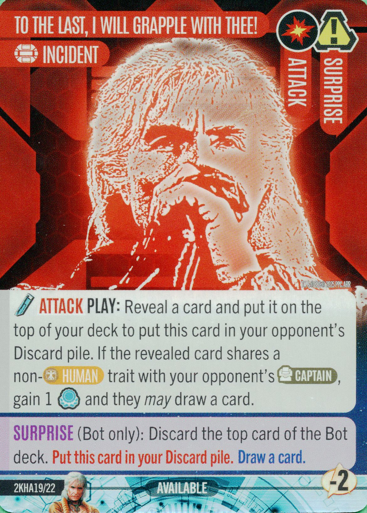
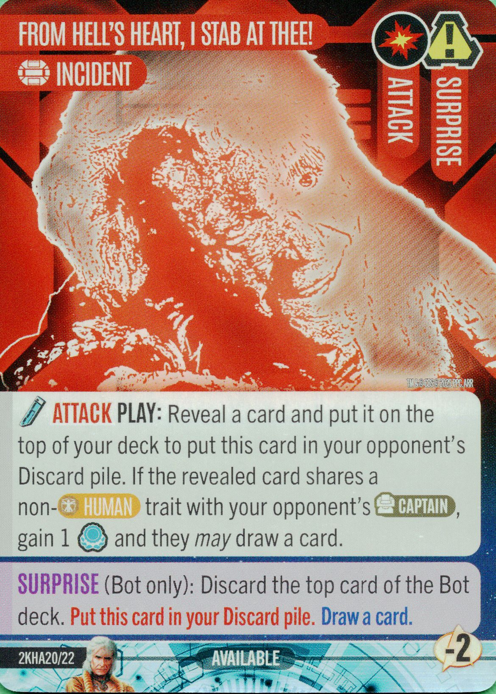
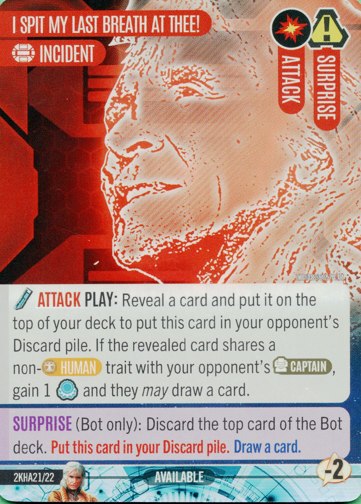
These lines, spoken by Khan who is quoting Herman Melville’s Captain Ahab from the novel Moby Dick, are his last (unheard by Kirk) taunt as he uses his last strength before dying to ensure that the Genesis Device will go off. Kirk is able to escape thanks to the sacrifice of Spock, but without warp power these words would have been the prelude to his doom.
Khan gets three, nearly identical (except for the thematic name) custom Incidents in his Available cards. This is a new way to handle Incidents, where instead of returning them, they will go in your opponent’s discard pile, at the low cost of placing a card on top of your deck (and the standard action token). If the revealed card shares a non-Human trait with your opponent’s captain, you’ll gain a Glory and the opponent may draw a card. The interesting thing about this is that, at least in multiplayer, this makes Khan the first Captain who could conceivably cause the Burn with a decent chance of controlling the victory. It’s the first warning for those of you facing Khan and reading this guide: if there’s only one or two cards in the Incident deck, you can go from winning to losing by the Burn very quickly due to gaining a few Incidents back to your discard pile. Now, Khan has to watch out for this too, since these cards will return to your opponent and they can easily send them back to you as well. When the Bot uses these Incidents, they’ll discard the top card of their deck, you’ll put the Incident in your discard, and draw a card, which actually isn’t too bad. You and your opponent might look for opportunities to return these cards back to the Incident deck, and you should be aware that there’s more chances for the last player to send Incidents to the first player after they’ve taken their last turn.
↑ back to topKhan’s Early Game Strategies
I tried to be fairly thorough in my descriptions of the cards because the reality is that understanding them is super important before knowing what to do at the start of any Khan game. I’m not necessarily going to discuss starting hand strategies because Khan can pretty easily get his whole deck cycled on the first turn, if he wants to. This would require you to activate Khan to draw two and discard one card, then use Marla McGivers to refresh Khan and find an Augment (possibly in the deck) and then use Khan’s ability again. The problem here is that most Captains would love to be cycling this much, but Khan only cares in the early game if he’s actively trying to get the explosion at Ceti Alpha VI to happen. If you can cycle once during your turn, then cycle again after you redraw, you’ll be triggering the explosion on your second turn.
Alternatively, you can try to stretch things out for quite a while. Assuming no opponents mess with you in the Neutral Zone, you can theoretically push off until turn four. That would require you to play Wajahut and Joachim to both send away teams on the first three turns, and control Locations on turns two and three. When you control a Location, you’ll spend a Dilithium from Ceti Alpha VI, which slows down the explosion. However, with the number of cards in your hand, it’s very unlikely you can stave it off past the beginning of turn four. To be sure, I think there’s a way to do it with Joachim’s ability and by using Marla McGivers as a Duty Officer once, then using the S.S. Botany Bay to promote Wajahut, but I tried experimenting with that several times and I couldn’t pull it off reliably without actively avoiding using action tokens, which is just inefficient.
More than that, I can’t really recommend holding off the explosion of Ceti Alpha VI longer than the start of turn three. I’ve played Khan over ten times (and I experimented with about ten games where I just played through the first turn after the explosion), and I am strongly recommending that you do not try to puzzle out ways to hold off the explosion of Ceti Alpha VI. Yes, you may get some Locations out of it. But you’re delaying access to your most powerful cards in your Developments, cards you desperately need to make up for your disadvantages.
That doesn’t necessarily mean I would suggest completely avoiding taking Locations at all. I think that a strong Khan game usually results in using Joachim to send an Away Team one turn and get a Person and Incident a different turn. At the same time, I’d use Wajahut the first two turns to get the extra action and two more Away Teams out, and then I’d use Ceti Alpha VI to control one Starting Location. But let’s be clear, some bots (and Humans) will not let you have any Neutral Zone control, and all they need to do is send a Ship there and you can’t get anything. Once Ceti Alpha VI explodes, you must move all your Away Teams from everywhere to Devastated Ceti Alpha V, meaning any progress you’ve made will be lost. So the wisest move, most of the time, will be trying to push for that second turn explosion.
Is it worth giving all three of your Incidents to your opponent on your first turn? You can do it, because you start with a hand size of six. I think I usually prefer to make sure Marla gets in play, both for the Dilithium and because I like using the deck churn to get more Dilithium on Ceti Alpha VI as quickly as possible. But you can pull it off, and it’ll make your opponent’s first cycle that much more annoying. Remember, you only have Marla and Ceti Alpha VI as direct sources of Dilithium, so unless you can get some help from market cards you’re going to want to get as much early Dilithium as you can to stockpile for later in the game.
The current rules for mixing boxes will mean that the game starts with cards in the Junk. In that instance, I might consider using Salvage to get a Ship I want, and I’d use that Ship to get Vacated Regula I out early, especially if there’s more than one trait in the Junk I want to check off. This could mean upwards of two checked traits early on, and the more traits you have checked early the better, because it will help you focus when cards show up in the market. It is a risk, however, because you could always wait to play Vacated Regula I until there’s lots of cards in the junk and you’re trying to get the last ones you need later in the game. I recommend the first approach, simply because using Vacated Regula I to return as many Incidents as possible is nearly always the correct choice, from my experience.
You don’t have a lot of choices early on when it comes to gaining cards, but Joachim’s random-draw ability to gain a Person from the top of the deck is better than you might think. Sure, it becomes more volatile as you mix boxes, but it’s rare to find someone who can’t help you at all. And it could mean another trait early in the game. Just something to consider. And the more Person cards you get, the more likely you are to be able to quickly benefit from the S.S. Botany Bay by loading it up with sleeping crew.
↑ back to topKhan’s Development Cards
Khan has no Reserve deck. In order to Develop, you’ll need to trigger the Reaction from Devastated Ceti Alpha V, which triggers when an Augment gets put into play. You can still use cards that allow you to enlist a Development, like Cpt. Terrell or Malik (he’s a fun one, check the market for his discussion). Khan has eight Development cards, including two Persons, two Cargo, one Ship, and three Directives.
↑ back to topCpt. Terrell (Person) (Dev Cost: Take an Incident)
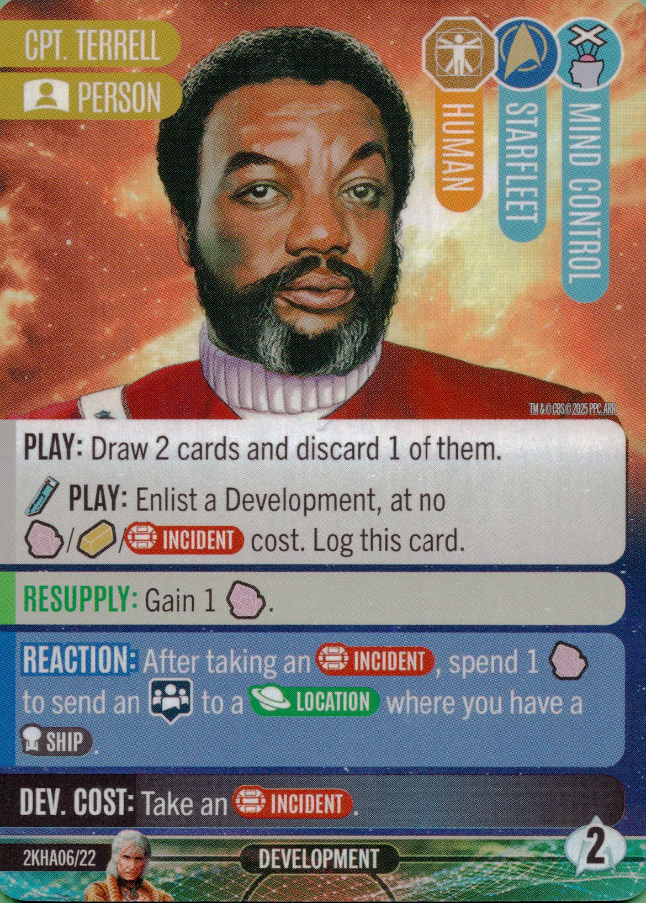
Captain Clark Terrell was the commanding officer of the U.S.S. Reliant as it supported the Genesis Project by scouting for suitable planets on which to test the device. He’s another great example of why you don’t let the Captain go on Away Missions (glad they figured that out by Riker’s era). Terrell was controlled by Khan until given the order to kill Admiral Kirk, which he resisted by turning his phaser on himself instead of killing Kirk
Cpt. Terrell has the Human, Starfleet, and Mind Control traits. He has a free play that helps you cycle by drawing two and discarding one, which is the main way I tend to use him in my games. It gets him into play (so you can develop the Reliant) and I always like more options each turn. His second Play Action enlists a Development at no Dilithium, Latinum, or Incident costs then logs Terrell. This came up in the BGG forums recently, so to be clear, that doesn’t mean ignore one of those types of costs, you ignore any costs in those categories. The distinction is important because Terrell only waives those three cost types, and not the Genesis Device’s requirement of having no other cards in your Development Pile. As such, Terrell still can’t enlist Genesis Device early. Keeping Terrell in play will get you a Dilithium on Resupply, and you’ll be able to use his Reaction to spend a Dilithium to send an Away Team to a Location where you have a Ship after you take an Incident (which you’ll do a lot of). I think that Terrell can work really well in your Duty Officer position, but the problem is getting him promoted. The most reliable way will be (ironically), the Hijacked U.S.S. Reliant, but you need Terrell or Chekov in play before you can Develop it, so you’ll end up using him for card draw first regardless (or you’ll beam him to another Ship).
↑ back to topCmdr. Chekov (Person) (Dev Cost: Take an Incident)
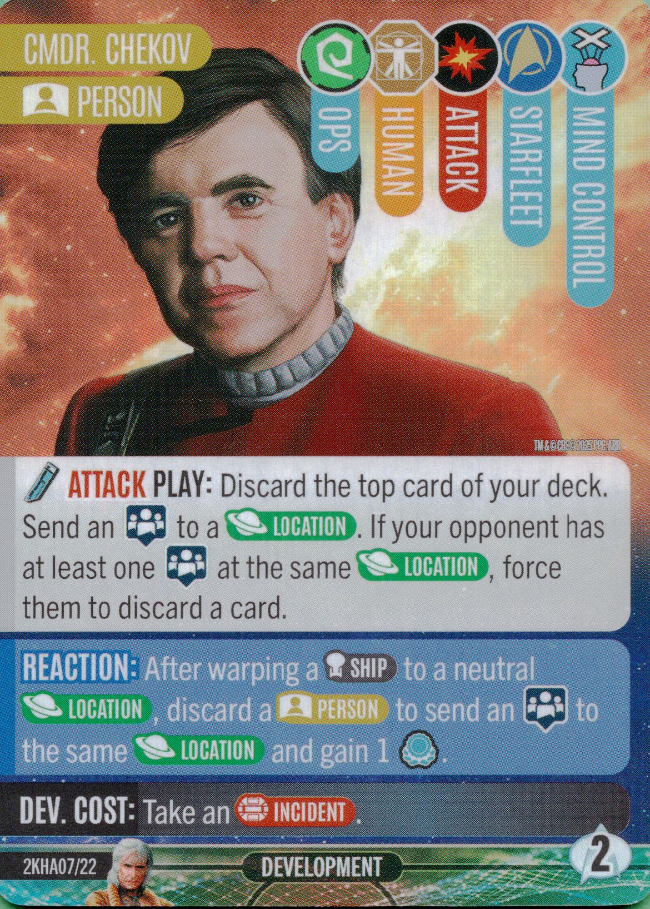
Commander Pavel Chekov served with Captain Terrell on board the U.S.S. Reliant, as it scouted appropriate planets for testing the Genesis Device. Once arriving at the derelict shelter of the former crew of the S.S. Botany Bay, Chekov realizes their peril too late. Khan is able to use the Ceti Eels to control Chekov, and use him to get to Genesis. Thankfully, his plot armor causes the Ceti Eel to flee after the death of Captain Terrell, saving Chekov’s life.
This version of Chekov is nearly identical to the card in Kirk’s deck, except that he has the Mind Control trait (and he is a Development instead of a Reserve, thus having two printed points). For Khan, I recommend using him primarily to send away teams and mess with human opponents, though there are likely enough Person cards in Khan’s deck that you can certainly utilize him as Duty Officer.
↑ back to topCeti Eel (Cargo) (Dev Cost: 1 Dilithium, 1 Latinum)
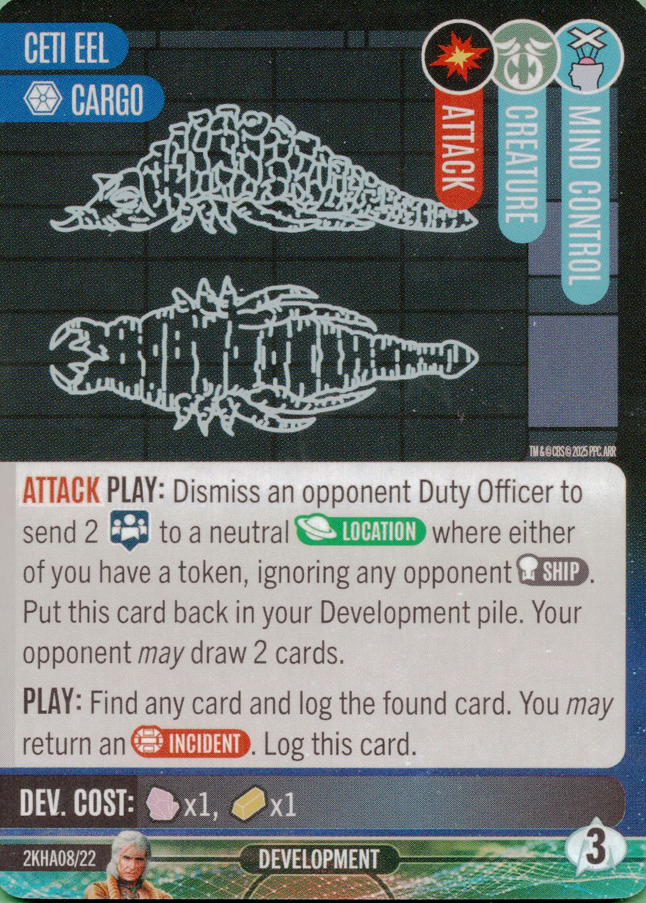
The only life native to Ceti Alpha V that survived the cataclysm, they nested in Khan’s people, killing them off one by one. When two Starfleet officers arrive with an opportunity for Khan to enact revenge, he uses them to his advantage to manipulate and escape his exile.
Ceti Eel has the Attack, Creature, and Mind Control traits. Both actions are free to play. The first requires you to dismiss an opponent’s Duty Officer to send two Away Teams to any neutral Location where either player has a token, ignoring any opponent’s Ship. Then, you’ll return Ceti Eel to your Development Pile and your opponent may draw two cards. Khan really appreciates having this boost for Away Teams, but you do have to balance giving your opponent extra cards with the benefits of controlling a Location. This is also our first Development that returns to your Development Pile, which has its own downsides when considered in light of Khan’s ultimate goal to deploy Genesis. You could always wait to get Genesis before using Ceti Eel (or simply use it once or twice and be strategic about when you play it), that way Ceti Eel becomes the only card in your Developments. Alternatively, you can use the other free play to find any card and log it, return an Incident, and log Ceti Eel. This is recommended for thinning your deck and for avoiding the Burn, especially when you have other ways of controlling Locations.
↑ back to topGenesis Device (Cargo) (Dev Cost: 2 Dilithium, 1 Latinum, have no other cards in your Development Pile)
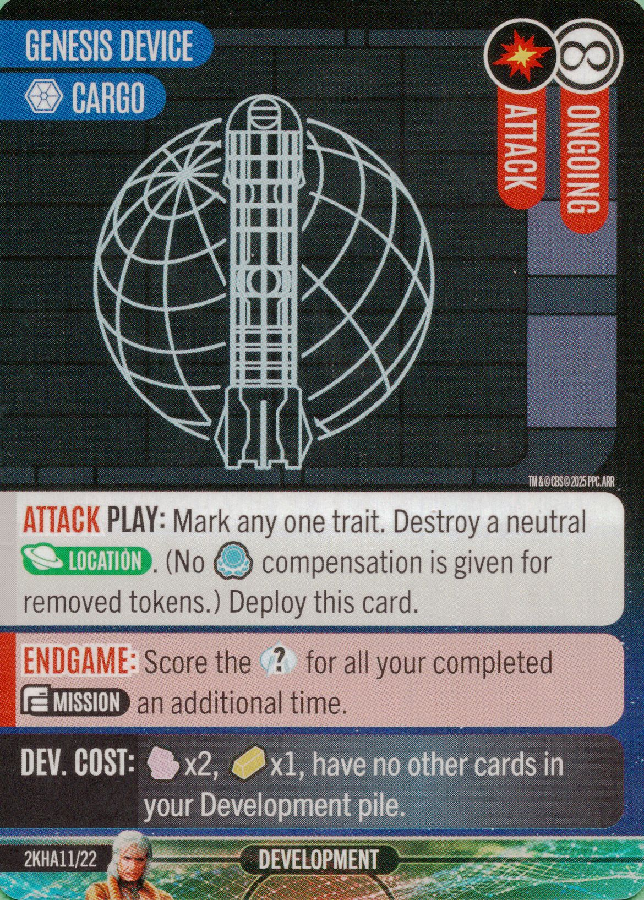
"What exactly is Genesis? Well, put simply, Genesis is life from lifelessness." - Carol Marcus, 2284
The Genesis Device was both a scientific tool meant to fight overpopulation and limited food supplies, and a weapon that could destroy a planet by converting matter into a fresh M-class planet. Khan came into possession of the device, and having been bested by Kirk in the Battle of the Mutara Nebula, detonated it as a final effort to exact his revenge.
Genesis Device has the Ongoing and Attack traits, with a free play that allows you to mark any one trait. This is great if you just can’t find that last trait you need from the market (when not mixing boxes, that’s often Synthetic for me). As a note, if you have checked all twelve traits, you can still play this card (it’s not a cost). Then, you’ll destroy a neutral Location, and no Glory is given for any tokens removed, however, the Ships and Away Teams aren’t destroyed either, just returned to your opponent’s discard pile and Captain card, respectively. At Endgame, the Genesis Device scores points for all of your completed Missions an additional time, which could mean up to six points (for now at least. Mission cards have been teased by Delphic Expanse Sphere and could change the math on that).
↑ back to topHijacked U.S.S. Reliant (Ship) (Dev Cost: 3 Dilithium and have a Person with Mind Control in play)
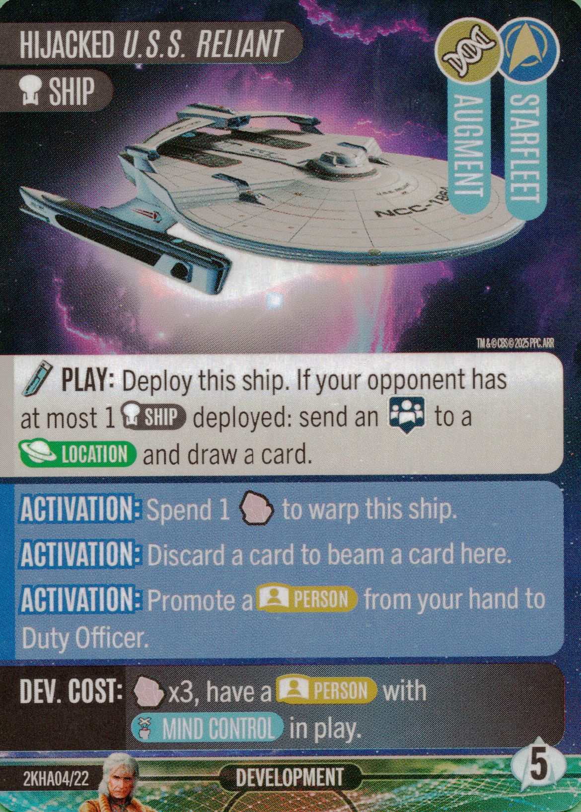
The crew of the U.S.S. Reliant was tricked into giving over their vessel to Khan when he mind-controlled Captain Terrell and Commander Chekov on Ceti Alpha V. According to the script, the crew was mostly marooned on Ceti Alpha V and was later rescued by Kirk after the events of The Wrath of Khan
Because it’s been hijacked, the Hijacked U.S.S. Reliant has the Starfleet and Augment traits, which means that you’ll be able to enlist more Developments using this Ship when it enters play. Similar to the market version of the U.S.S. Reliant, it has a Play Action that deploys and sends an Away Team and you draw a card if your opponent has no more than one deployed Ship. Beyond that, it has the typical Activation for a starting ship, including warp, beam, and promote. It scores you five points, and you’ll need to have Terrell, Chekov, or a market card with Mind Control in play to Develop it (no such market card currently exists).
↑ back to topInfiltrate (Directive) (Dev Cost: 2 Latinum)
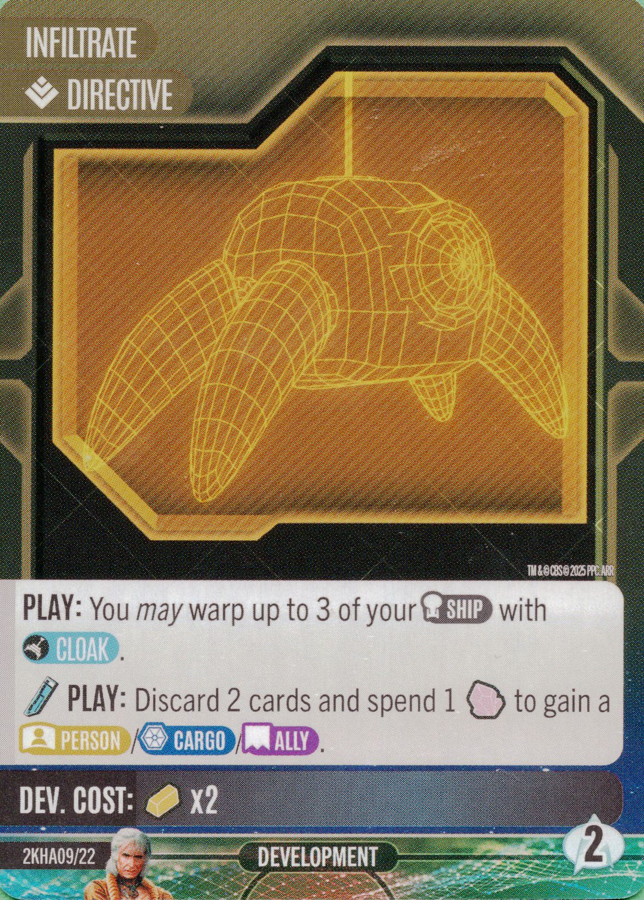
We haven’t seen this Directive since Sela’s deck, and it’s a bit more useful there because it allows her to warp her Ships with cloak, and Khan doesn’t have any of those without gaining them from the market. Khan doesn’t have a lot of ways to gain cards directly from the market, so Infiltrate’s second Play Action will help him get what he needs. It’s not a card I use every turn as Khan, but it can provide some helpful options.
↑ back to topSurprise Attack (Directive) (Dev Cost: 2 Dilithium, take an Incident)
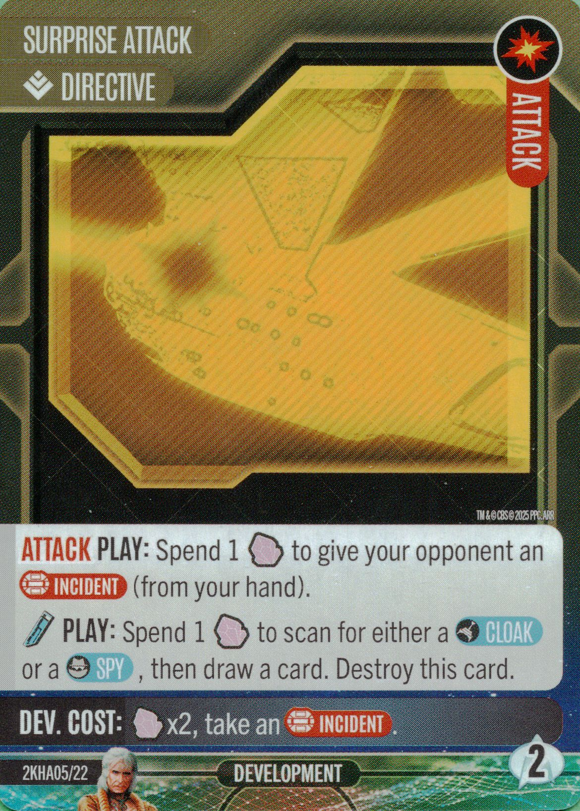
Who can forget that first strike on the Enterprise, taking out all those cadets that stayed at their posts! Khan can use Surprise Attack to give an opponent an Incident from your hand at the cost of a Dilithium. I love using this when playing with promo Incidents or just more complex ones like Dilithium Shockwave. Try not to give your opponent your Available custom Incidents, because they can just give them right back to you. You can also use this Directive in a pinch to spend a Dilithium and scan for a Cloak or Spy card. That can be useful if you’re just not finding either of these traits, but I tend to recommend against it, because after drawing a card, you’ll destroy Surprise Attack, losing out on its two points. Most games I keep this card around as a clear message to my opponent not to mess with me. Khan isn’t going to let the Burn happen. A Genesis Detonation? Sure, but no Burn.
↑ back to topRevenge Is a Dish Best Served Cold (Directive) (Dev Cost: 1 Latinum, have Marla McGivers logged)
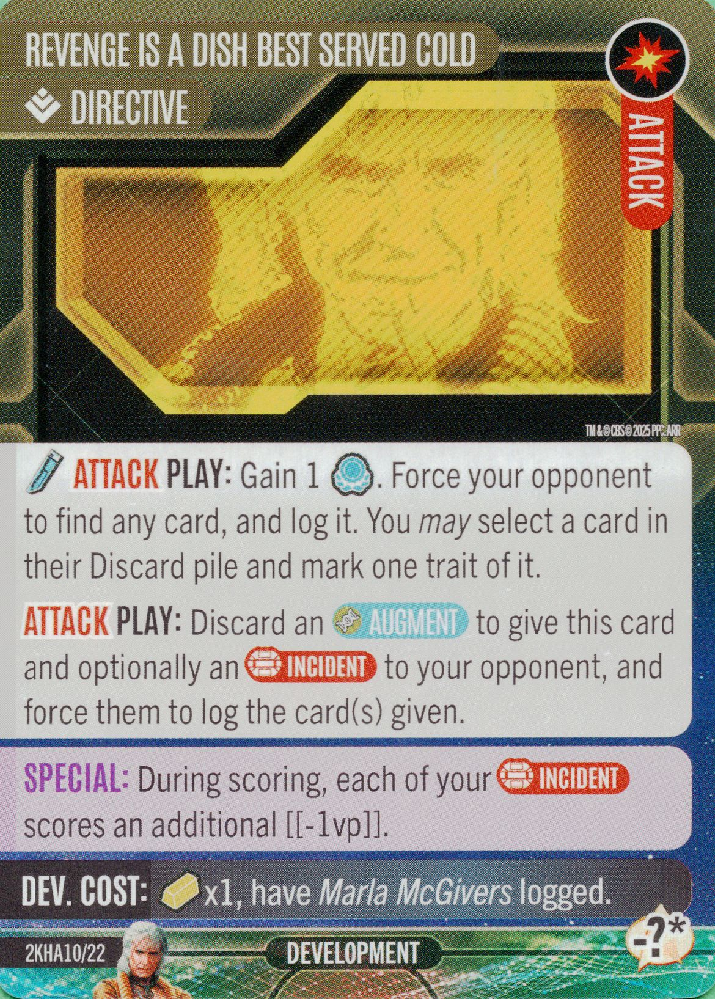
“Ah, Kirk, my old friend. Do you know the Klingon proverb that tells us revenge is a dish best served cold? It is very cold… in space.”
Putting aside the question of where Khan learned Klingon Proverbs (did they give him a computer database on Ceti Alpha V?), this iconic line is now a custom Directive! There’s two main ways to use this card, and you’ll need to be intentional with when and how you decide to use it. The first Play Action gains you a Glory, and forces your opponent to find and log any card (their choice). Then, you may select a card in your opponent’s discard pile and mark a trait. This is fantastic for when your opponent is aggressively playing to withhold cards that you need to finish your trait-marking game. This is especially useful against the bot, who doesn’t have a clue what’s going on with your traits.
Alternatively, you have a free play that requires you to discard an Augment to give this Directive and optionally an Incident to your opponent, and they have to log both cards. Logging an Incident is bad enough, but this Directive increases the negative victory points of each Incident by one at the end of the game, so using this Directive essentially gives your opponent negative three points, with the potential for more. They’ll be far more focused on returning Incidents, by necessity. Just beware of Captains and cards that allow Incidents to be returned from the log (Pike) as this won’t be as effective against those Captains. Also, be careful not to Develop this card and fail to give it to your opponent, as it can count against you as well. That’s another downside with just using it for gaining traits and Glory.
Notably, this card is also a rare (as of Wave 2, the only) way to force the Bot to log an Incident. The usual Bot rule that it will return an Incident instead of logging it only applies to Bot effects; since this is your card and not a Bot effect, the Bot will log the Incident just like a human opponent. This is also mentioned in the FAQ.
↑ back to topKhan’s Development Strategy
Khan can start Developing using Devastated Ceti Alpha V as soon as it flips, so the real question is how to speed up that process. As a reminder, you refresh Devastated Ceti Alpha V when you return an Incident, and that’s a Passive ability so it can occur multiple times a turn. Your core Augments are Joachim and Wajahut, so getting them into play (even beamed) is quite the necessity for you. Don’t let them get stuck on a ship (S.S. Botany Bay for example) without a way to quickly get them back. There’s also one more Augment trait card in your Developments, the Hijacked U.S.S. Reliant, so Developing that ship quickly can benefit you.
Since you’ll need to have a Mind Control trait in play to enlist the Hijacked U.S.S. Reliant, I recommend grabbing Cpt. Terrell as your first Development most of the time. He’ll help you with deck churn, and while that doesn’t matter for cycling it does matter for having the best possible choice of cards each turn. In a real pinch you can use him to Develop a card and then log him, and that Development can be the Hijacked U.S.S. Reliant, since he is in play until the end of that operation. If you’re really pushed for trying to get Away Teams out, you can also consider Chekov as a first Development, but I really prefer Terrell.
From there, I like to make sure I get Surprise Attack as early as possible. Mostly, this is for the ability to get rid of Incidents, which I find that Khan can get a little overwhelmed with. A way to get them out of your hand without spending an action token is really crucial, focusing on Incidents from the deck as explained above. As a third option, I want to make sure I get Revenge Is a Dish Best Served Cold so I can either give it to my opponent and ensure I’m not stuck with it, or start getting the rest of the traits I need.
There is another strategy that involves using Vacated Regula I to destroy cards in your Development pile in order to move the game forward and rush your opponent. I am not typically a fan of this method as it doesn’t usually result in all your traits getting marked. However, against a skilled opponent, it can really throw them off their game if they find the game is ending too quickly to really set up major point-scoring combinations. If you’re going this route, I find that Infiltrate and Chekov are the best options for destroying. I’d also recommend using Ceti Eel for its self-log ability, so that you’re not having to fish it out of Developments multiple times.
How to use Genesis Device is self-explanatory, but be sure to use it to take points away from your opponent. Remember, destroying a Location is kind of pointless if you’re not at least taking some points away from them at the end of the game. It can be a big swing (six points for all Missions) and that final trait you need.
↑ back to topNotable Market Cards
It’s that time again, to evaluate cards in the market for Khan and give you my thoughts. As always, I appreciate everyone sharing any really interesting combos you’ve found in the market in the comments on BGG or the Discord (in the Khan conversation). Cards found in both the core box and To Boldly Go are discussed in the section for To Boldly Go. I won’t mention this every time, but just remember that focus scoring is capped out at three points, but can be as low as one point (or even zero if you’ve played poorly). Also, you may want cards for their traits, even if they don’t help you much otherwise.
↑ back to topPerson Deck
To Boldly Go: Jarok is a really interesting way for Khan to speed up his game, but you’ve got to meet that threshold requirement which won’t happen until you’re already late in the game. He’s also not that helpful as a Duty Officer because you have so many Attack cards. I’d avoid him if you have the choice.
Gral is a great choice, for both the Ambassador trait and another way to return Incidents by giving them to your opponent. If you use him this way, you still get to refresh Devastated Ceti Alpha V.
Ash Tyler is a good choice, as you’re likely to have at least one trait you can use (mainly Spy) and Khan tends to hoard Glory so you’ll be able to use him as Duty Officer pretty effectively.
Commander Tysess is fine for Khan, and can help you get a Duty Officer promoted when you don’t have a Ship that can promote. A free beam can also help you fill up the S.S. Botany Bay.
Degra’s main help for Khan is as a Scientist card to return Incidents, but Khan can use most of the rest of his abilities pretty effectively.
Harry Mudd is a good card once Khan can ignore restrictions, but prior to that he’ll be clogging up your deck.
Hoshi Sato might be helpful late game if you have the right cards to use her second Play Action, but I don’t think any Khan player is going to be seeking her out consistently.
Jackabog is a decent card for Khan because he’s a great way to gain more ships, and once you flip your captain he can get you an extra Encounter.
Landru is mostly good for Khan because of the Synthetic trait, which is rare in TBG but appears on Khan’s board. Landru’s not a bad way to gain an extra Location, but be careful not to log your Augments with him until you’ve completely Developed.
Lursa is a good card for Khan, because he needs to send Away Teams and gain some extra ships, and she helps solve both problems.
Malcolm Reed is useless in the Staging Area, but can be a good Person to have as Duty Officer for the Away Teams.
Malik is valuable as an Augment, but he doesn’t really do much for Khan as Duty Officer. His passive is pointless to Khan, but he can help you to get two Developments (one when you put him into play, and another from his Play Action). Khan just won’t care about his Military skills.
Petra Aberdeen is decent for Khan because she can find and log cards from the junk, which translates to marking traits and not clogging your deck.
Phlox is better once you can meet all restrictions, but you should also get him because of that Doctor trait.
President Rillak can be good for Khan if you’re using a ship for beaming some Incidents, which requires a ship set aside as a beaming-ship. You don’t have Utilize or Inspire, so she’s really not helpful as a Duty Officer.
Riva is actually a fine card for Khan, especially if you’re ready to start logging Attack cards. Now, that’s situational, for sure, but it’s worth considering. His traits of Telepath and Ambassador make him very useful for options on multiple potential markable traits.
Rom’s not a terrible choice for Khan, as he has a decent early Latinum engine and the Engineer trait.
Sarina Douglas is a desired card simply for the Augment trait. Her Duty Officer role can be helpful, but Khan doesn’t care about her traits.
Soji Asha is perfect for Khan because she can log cards and she has a very rare trait for the To Boldly Go commons (Synthetic).
Su’Kal is universally helpful and you’re very likely to at least have one or two Incidents left at game end.
Talok has the Spy trait for Khan’s trait game, and his Passive Operation is nice, but the rest of his text isn’t remarkably helpful.
Tevrin Krit is great for Khan because anytime you can scan the person deck, you have a better chance to get a trait you need.
Thelev is fine for Khan, especially once he becomes Wrathful Khan and can use the Passive Spy Operation.
Travis Mayweather is good for getting those Away Teams out, but you kind of like Khan’s Activations and Dilithium is rare, so you probably won’t use him constantly.
Va’Al Trask is just okay for Khan, without much too notable.
Vice Admiral Pasalk is not really great for Khan, but it’s good to avoid letting your opponent have it.
Second Contact:
D’Erika Tendi has some abilities that don’t matter (gaining on Influence and Military) but I like gaining Ships from the junk and stealing Latinum, making this one worth considering (and she’s a great Duty Officer).
Jennifer Sh’reyan is good for Khan, can help speed up your S.S. Botany Bay Location control while gaining Dilithium you need.
K’Ranch is a fine logging card, especially considering that you can quickly thin your deck while gaining traits.
Ma’ah is only really good if you’re putting Klingon cards in play consistently, as his normal Play Action is nearly pointless for Khan.
Parmen is fantastic as a Telepathic Augment, along with benefits that Khan can mostly benefit from as well as anybody else.
Core Box:
Admiral Necheyev is fine for Khan, but not necessarily any more than any other Captain.
Admiral Pressman is great for a Captain with a lot of Attack cards, and you can often find yourself with no way to promote, so his self-promotion to Duty Officer is often helpful.
Ambassador Kamarag is an overpriced scan for a Klingon or Starfleet card, but if you need his traits, it might be worth it.
B-4 is worth the trait, but he’s also not a bad card to have so you can grab Cargo matching traits you need from the junk. Alternatively, you can use him to thin your deck and gain Dilithium.
Bruce Maddox can be good if you still need the Scientist or Engineer traits and have a Synthetic hanging around in your deck.
Captain Dorg is a pretty good card for Khan in terms of how many different options he has, but he’s not critical to your gameplay.
Joret Dal is worth the Spy trait usually, and he does help thin the deck and increase your hand, so I say go for it.
Laas is fun because his Play Action can allow you to put a Person in your Staging Area, which can be an Augment and thus will trigger Devastated Ceti Alpha V’s Reaction for enlisting a Development. He’s not bad as Duty Officer either.
Laris needs an Android to be useful, otherwise she’s only really helpful as a Duty Officer.
Lenara Kahn is good for her Scientist trait and specifically scanning for Anomaly cards, but beyond she’s probably not worth seeking out.
Lwaxana Troi has two traits you’re looking for, which makes her helpful, and she can refresh Khan, which is not all that farfetched thematically if you think about it.
Mirok’s fine at Duty Officer and has a Scientist trait, but it’s unlikely that you’ll have too many Cloak cards you’re anxious to log.
Moriarty is great once you have Wrathful Khan, but until then he’s just an okay Duty Officer.
Peanut Hamper is great for the Dilithium gain and the Synthetic trait.
Sakonna is only good for Khan if you’ve been seeking out Weapon traits, and you have too many traits you need to mark for that to be a priority.
Zefram Cochrane is a chance at another Encounter and the Engineer traits, so I like him.
↑ back to topCargo Deck
To Boldly Go:
Borg Spatial Trajector can be useful once you get to Wrathful Khan.
Cloaking Device is pretty great for Khan, both with a rarer Cloak trait and the ability to better send Away Teams.
Computer Virus is a fine card for Khan, but it’s more about keeping it from your opponents.
EVA Suits are helpful for Khan because it’s another way to put Augments in play without spending action tokens or discarding cards to beam them.
Forced Singularity is not the most necessary card for Khan, and you won’t be able to have additional Duty Officers until you become Wrathful, but it’s not a bad card for him either.
Holosuite is fine for Khan because the Business trait, the ability to scan, and he’s got a decent Latinum engine early-game.
Horta is fantastic, both as a Creature trait (hard to find) and as an additional way to get a Development. You won’t get Dilithium from it until late game (Wrathful Khan), but it’s worth having.
Jago’s Epigenetic Implant was designed for Khan, in the sense that it really benefits from Augment traits and can be marked as a Doctor or Business trait.
Kemocite is only really good if you’ve got a decent amount of weapons or extra actions to use with the second free play action.
Lirpa is fine if you have other Vulcans but otherwise not special for Khan.
Medical Diagnostic Hat has the Doctor trait and a way to free play an Incident, so I’m in favor of Khan getting it.
Orb of Time is good for everybody, Khan included.
Phasers are great for Khan.
Plasma Manifold is excellent so long as you have enough Dilithium to power it.
Saurian Brandy is fine, particularly once you remove Specialty restrictions.
Type III Disruptor Pistols are fine but not necessary.
Universal Translator is probably a waste of a card for Khan, because it would be really hard to pull off anything useful with it.
Second Contact:
Gift Box might be a bit helpful, but I wouldn’t go out of my way to get it with no usable traits.
Moopsy is a fine Creature trait but you want to be careful not to log your Augments.
Protocol 12 is a weird one because of the Special that treats your Person cards with Doctor as Augments while it’s in play, but you’ll only ever want to put it into play with the first Play Action that’s Specialty restricted. So it may be situationally worth it, but only rarely, despite turning Doctors into Augments.
Core Box:
Biobed isn’t a fine way to return Incidents and get a Doctor trait.
Ferengi Wine helps Khan have more control over gaining Ally cards, so I’m not opposed to it.
Mek’leth isn’t great for Khan, as you’ll have to discard a card with no benefit to play it.
Tachyon Detection Grid probably isn’t worth it, even playing against Sela.
Tribbles is worth the Creature trait but not much else.
Unstable Wormhole is great, specifically once you’re Wrathful Khan.
↑ back to topShip Deck
To Boldly Go:
D’Kora Marauder Is a decent choice since it can be used by Khan to get his Away Teams out, and you benefit from the Business trait.
D’Var is amazing because you’ll be able to return Incidents using the Scientist trait and Vacated Regula I, and it will enter and exit play as you control Locations.
Medusan Vessel isn’t special for Khan but is still a good ship.
Vor’Cha Attack Cruiser is great for the Away Team and Cloak trait.
Xindi-Aquatic Cruiser is fairly high-cost for Khan with no other major upsides, so it might be worth skipping.
Borg Probe is almost always great for everyone, though Khan doesn’t have Missions to worry about it’s still a great ship for controlling Locations.
D’Kyr is another ship that’s great for the Scientist trait and potential Incident return.
Holographic Drone Ship is great late-game once Khan loses his Specialty restrictions. Earlier it’s not as great.
Kazon Raider might be okay for Khan considering he has decent Latinum generation. I don’t usually find that he’s at a loss for ways to get more cards, but the option is always appreciated.
Pakled Freighter is a fine option for Khan, especially since he can use it to gain additional cargo from the junk.
U.S.S. Enterprise-C has the Ambassador trait, a great recall ability, and focus scoring, making it a great choice for Khan.
The U.S.S. Pasteur is great, with two potential traits and the potential to scan for specific traits, all of which Khan needs.
The Xindi-Reptilian Battleship is another great option, with focus scoring and a way to gain Cargo. You’ll be less concerned to get the Glory from the Weapon, and getting traits you actually need.
Second Contact:
The R.I.S. Talvath is pretty good, both for the Scientist trait and the potential Dilithium.
Fesarius is quite good for Khan, as he has plenty of ways to get the Encounter, with an Ambassador trait as well.
Core Box:
Bird-of-Prey might be kind of expensive for Khan, but no more than any other Captain. You’ll benefit from that Cloak trait, and sending an Away Team is always a benefit.
K’t’inga Battlecruiser is another great way to send Away Teams.
The U.S.S. Reliant is much better late game once you can ignore the Specialty restriction, but once you can, it’s a great way to rush the endgame and send Away Teams.
The Son’a Battlecruiser isn’t a ship you want used against you, so for that reason alone it’s worth taking so your opponent can’t steal your Dilithium. Besides, you can benefit from getting some more Dilithium as well.
Voth Research Vessel is a good ship, and Khan doesn’t have to log the Person beamed there in order to gain the Encounter, making it ideal for sending Augments.
↑ back to topAlly Deck
To Boldly Go:
The Kaelon II Science Ministry isn’t terrible, you just don’t have a lot of methods to log cards and you don’t get any benefit from gaining Research.
Orion Syndicate might be a good choice for Khan, if only for resource production.
Red Squadron can work well, especially since you can beam a Person from your Staging Area to the S.S. Botany Bay.
Salt Vampires are excellent for Khan, so long as you don’t mind the other card you’re logging. You get the Telepath and Creature traits so there’s some good flexibility there.
Tellarites are good because you can really overwhelm your opponent with your Incidents.
Unimatrix Zero doesn’t do much for Khan without Borg Probe.
Vadic’s Splinter Group is a must-get, not just for the abilities but the Augment trait makes it a great way to speed through your Developments.
Vidiians is great, since Khan can get overwhelmed with Incidents.
Arin’Sen only makes sense for Khan if you’ve been gathering Klingons throughout the game.
Letheans work pretty well for Khan, even if it’s just for the Telepath trait.
Suliban is best as a way to get another Augment recalled so you can Enlist multiple times a turn.
Bolians, Bynars, Denobulans, Kelpiens, and Organians are usually pretty good for everybody, but Khan is stuck with Specialty restrictions until the end of the game, so it may be less worth it to grab these Ally cards than it is for other Captains.
Second Contact:
Betazed Intelligence is only useful in coordination with other cards, as you don’t have anything in your deck that interacts with its pinged traits.
Illyrians might be nice when Khan has trouble with promotion of a Duty Officer, and he does have some Starfleet which might be helpful to be able to get a good trait. .
Nova Fleet is great for everybody, including Khan.
Core Box:
Edosians are pretty good for Khan. You’ll get some deck churn to get what you want and you’ll probably be able to get the Encounter once your Captain is Wrathful Khan.
Emerald Chain doesn’t really synergize with anything in Khan’s deck.
Halkan Council will give you Dilithium once, and then probably will get logged.
Karemma are great for Khan, either for extra actions or Latinum generation.
Tholians are pretty great for everyone, and Khan does well because he usually has a decent number of Locations since there’s no Strange New Worlds logging controlled Locations.
↑ back to topEncounters
To Boldly Go:
Delphic Expanse Sphere has a free-play to send Away Teams and market gain-utility which Khan can make good use of.
Gomtuu is fine, but only to control the Neutral Zone. The Research skill and the Military gain element is pointless, making the minimal two points kind of underwhelming for Khan.
New Federation Applicants will score okay, but returning Incidents will be extremely useful for an Incident-afflicted Khan.
Species 10-C is good for Khan since he can’t really make use of logged Locations otherwise.
Stone of Gol is also good for Khan, and is a great way to gain more cards from the junk.
V’Ger, Koala and the Guardian of Forever nearly always have general applicability, though you can’t get a trait from V’Ger and Guardian of Forever isn’t as helpful with no track movement.
Core Box:
Ancient Gene Fragments has the Augment trait, making it hard to pass up. Beyond that, you may have a decent number of Away Teams on Controlled Locations and Scientists in Play to make this effectively a free-play Encounter.
Boltzmann Brain is great for everybody, and Khan loves it too.
Iconian Gateway is pretty good for Khan, especially with a thin deck and repeated use.
Omega Particle is a great way to never worry about resources again but limited scoring.
Sha Ka Ree can be awesome for Khan, especially if he’s considering a forced Burn win.
↑ back to topPromos
U.S.S. Enterprise-B is great for Khan once you no longer need Person cards for the S.S. Botany Bay.
Sehlat isn’t much of anything for Khan without Vulcan cards.
Wesley Crusher is a weird one for Khan, because he can’t use the skills and he often doesn’t need to be using the Activations of his Person cards to the same degree as other Captains. He might be best to get a one-time use Development.
Golden Statue of O’Brien isn’t anything special for Khan.
Drones of Cube 90182 need a Borg card to make sense for Khan.
Frank Hollander might be worth the Incident free-play.
U.S.S. Cabot is good for the Scientist trait and to gain a Creature.
↑ back to topIndividual Captain Considerations
Here’s some thoughts on how Khan fares against each Captain in the game to date, and some general principles I’d apply when facing them:
↑ back to topTo Boldly Go
Georgiou: Georgiou is a jack of all trades in some respects, so I’d really hammer her early in the Neutral Zone before she can get a ton of ships out, which means you need to get to Devastated Ceti Alpha V quickly, then start Developing and taking Locations. Don’t let her move her Research focus scoring up (by refusing to concede those cards and Neutral Zone Locations) and make her worried that there’s not enough time to get everything done.
Soval: I would try to mess with a Soval player by rushing the game and hitting them with Incidents. I think Soval is about as dynamic as you are in the Neutral Zone, so mess with him a bit and force him to really decide where he’s going to get his points from. Try to build up a good fleet and speed through your Developments at his pace, if possible.
Kirk: The most iconic match-up, but Kirk has the advantage here. He can play quickly, get a ton of Encounters, and score really well. You can try to rush him to the end of the game and saddle him with Incidents, but that’s not going to make the difference. You can put up a good Neutral Zone fight, but he’s still going to attack you with the U.S.S. Excelsior. I would try to gain your advantage with Advanced Locations and a good tableau, while he’s busy logging planets for Encounters. And make him fear a Burn ending, so that he doesn’t let them build up and wastes actions dealing with your Moby Dick quotes.
Archer: Archer might be the one Captain that it’s worth fighting early in the Neutral Zone, as he doesn’t have enough Ships and Away Teams to stop you early on. That said, he has a decent point threshold and is going to steal good ships with T’Pol, so fight where you can and focus on junking as many cards as you can otherwise. He’s got some traits you want in his deck so be sure to use Revenge Is a Dish Best Served Cold to get traits marked.
Rebner: This was actually a pretty hard match-up for me in solo. Both Captains are adept at rushing the game (especially the bots). It can lead to match-ups where you’re hard-pressed to get all your traits marked. However, you can mess with Rebner in the usual ways (taking Military focus cards primarily). Just be aware that you’ll need more ships than you think, as Rebner has ways of forcing you to log your Ships.
↑ back to topSecond Contact
Pike: A rush game against Pike is a solid strategy. There’s not a ton he can do to mess with you if you try to end the game quickly. I’ll also note that he’s someone who likes Incidents and logging them, which can mean there’s a window of opportunity to win in the Burn. I would suggest taking that opportunity when you can, even if it doesn’t always feel the best. If you’ve decided a Burn win is cheap, then at least make sure that Pike has a bunch of Incidents and put up a good fight in the Neutral Zone.
Riker: Riker thrives in long games, so please rush against him. It’s going to feel like he’s doing a lot, but much of what he’s doing won’t translate into points until he gets into his Developments. If you can speed up the game and really force him in a corner where he’s left with very little track movement, you can come out on top in a quick game. Otherwise, you’re going to get stomped by his high scoring potential.
Freeman: Freeman, both Bot and multiplayer, gains a ton of cards from the market and scores really high (she likes Ally cards like Picard). Knowing this, you’ll either need a strong, quick rush-strategy, or you’ll need to beat her at her own game by preventing her from going into the Neutral Zone. That becomes harder as the game progresses, so get the points you can and out-pace her in development tempo. And for those paying attention, this is the exact same advice I gave the Rebner players last time, because it’s the same strategy for Khan.
↑ back to topCore Box
Picard: Picard is balanced enough that he can adjust for a rush strategy (arguably a good Picard player is rushing regardless). Do your best to play the trait collection game while still making it clear that you’re not holding out for a terribly long game with Picard. His point threshold is going to be higher than yours, especially with lots of focus scoring, so junk those focus scoring cards when you can and get their traits via Salvage. Picard isn’t actually super strong in the Neutral Zone, so use that to your advantage and overwhelm him with Ships, or at least force him to spend time gaining Ships to counter you.
Shran: Shran will mess with your Duty Officers using his Ushaan-Tor, which will be annoying. If you can find a way with weapons to defend against that, it’s helpful to do so. Khan doesn’t have a lot of weapon cards with traits he’s hunting for, so it’s fine to junk them or ignore them so long as you don’t let Shranbot get too many (and keep an eye on an opponent with many weapons too). You’ll probably have a Neutral Zone Advantage until Shran gets into his Andorian Commandos, so use that advantage.
Koloth: In a very short game against Koloth, you’ll need to decide what’s most important. To me, that’s getting as many traits as you can and saddling him with as many Incidents as possible, all while gaining a card advantage while he tries to come out ahead with Glory alone. This is another interesting match-up that I’d love to see some data on from the community.
Sisko: Because Sisko has so many Ships (and incentives to get them) you’re not going to have great control of the Neutral Zone. But you can try to put pressure on him, especially with lots of Incidents. It’ll force him to Enlist Julian Bashir early to deal with the Incidents, and that keeps him from some of his more dynamic Developments. I don’t know if you can rush him into a victory every time, but it’s worth trying, because in a super long game he’ll usually trounce.
Sela: So, just let Sela have the Neutral Zone. Use Joachim for more Person cards and work really hard to get Ships and clean out your Developments. If you do all of that, and you do it quick enough that Sela can’t rush her tracks or Developments, you might have a decent shot at ending the game before she can really get her whole kit implemented.
Burnham: Burnham’s Dilithium in the market is actually super helpful, if you can find cards that can gain from the market. As such, it’s a rare situation where enlisting Infiltrate as fast as you can is a great method. You’re going to be fighting for cards from the junk, especially Ships, so watch out for an empty Ship deck and a market to freely choose Ships from. She isn’t amazing in the Neutral Zone so take some Locations early and stake out a good Location tableau.
↑ back to topPutting It All Together
Khan is not particularly hard to play once you understand the gameplay arc. On the contrary, there are some ways that his game is more straightforward. His deck deviates from standard gameplay, and is certainly about as different as you can be from Picard (for now). You can ignore tracks completely, making focus scoring and balancing Utilize completely irrelevant. The biggest issue for new players is understanding the arc of Khan’s gameplay, and the importance of getting traits checked off as fast as possible. Sometimes, this means more blind card-gain early, using Joachim for example. The earlier it is in the game, the more likely you are to successfully get a trait marked that you need. As the game winds down, you’ll be able to focus on what you don’t have yet, and you’ll always be able to use Genesis Device to get the last trait marked.
I think there’s very little downside in rushing your Developments. To be sure, Khan is a little susceptible to a Burn loss, as many of his Developments require him to take Incidents. I find that the more cards Khan has, the worse off for him. Cycling doesn’t get him any Developments, but you need those Augments to be entering and leaving play as often as possible. Unfortunately, Khan doesn’t have many cards that allow him to log cards in his deck, so be on the lookout for market cards that will keep your deck trim. Focus scoring cards are nice when they’re useful, but remember that each one could be worth no points, and best case scenario they’re the same value as Ally cards.
I think Khan, more than a lot of decks, is really designed to have the most dynamic gameplay in multiplayer. Giving Incidents to your opponent, messing with them using your Attack Directives, and sending Away Teams with Ceti Eel are all more satisfying against a human (you can’t really taunt a bot. Well, you can, but they won’t care). That being said, I’ve played plenty of my prep games for this guide against bots and it’s still quite effective to saddle them with extra Incidents.
I don’t feel like there’s a ton more to say, except to keep your objectives in mind, commit to your strategy (rush versus trait hunter) and get ready to serve up some Revenge.
I hope you enjoyed this strategy guide for Khan’s deck. Be sure to add any comments or questions below or in the Star Trek Captain’s Chair Discord. Make sure to subscribe to the BGG listing for Second Contact for my next Captain, Captain Christopher Pike from Strange New Worlds. And if you haven’t heard, there’s 10 more Captains heading our way next year, and I’m excited to write about all of them.
↑ back to topVideo Playthroughs
Playthrough by Paul Grogan (Gaming Rules!) featuring Khan: